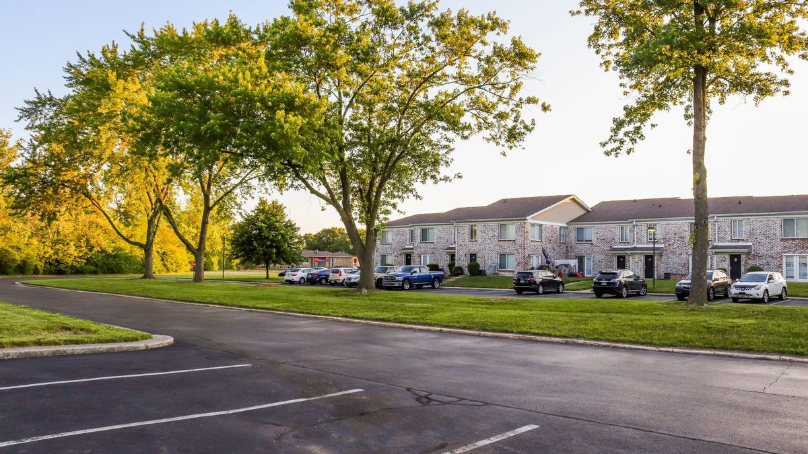
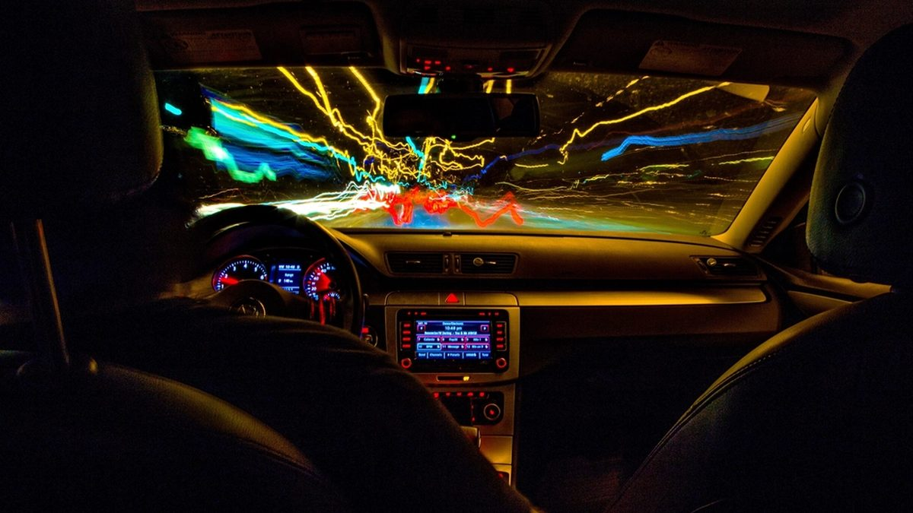
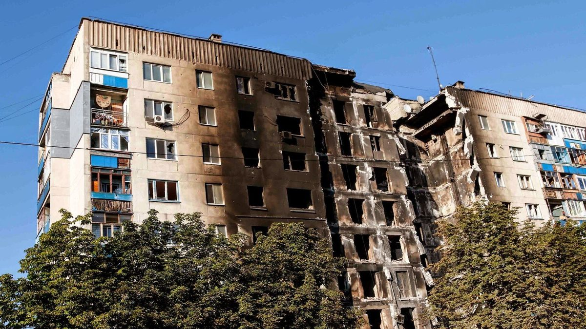
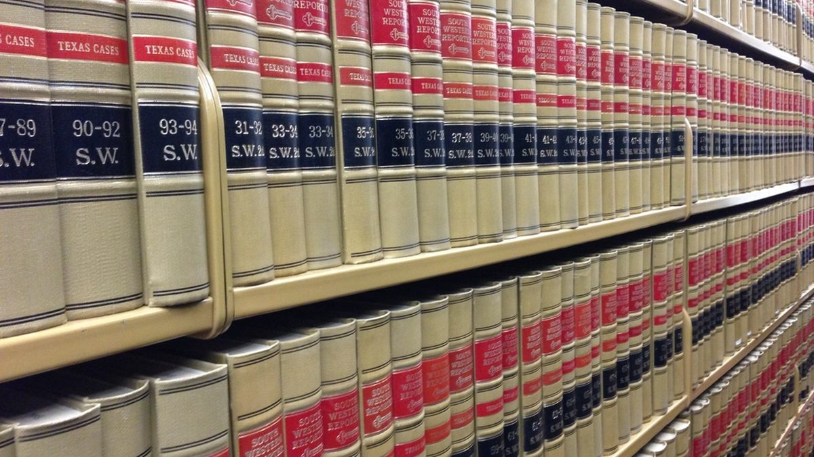
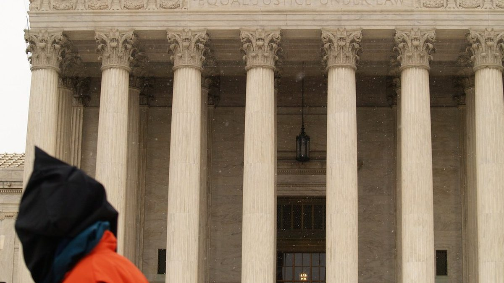

Aylık Bülten · Eylül 2026
Hukuk Bülteni — Eylül 2026
Türkiye'de Eylül 2026'da öne çıkan, tıklanabilirliği yüksek hukuki gelişmelerin kanun atıflı ve ayrıntılı özeti: kira artış oranından AYM kararlarına, SPK fon tasfiyesinden yeni usul düzenlemelerine.
1. Eylül 2026 Konut Kira Artış Oranı: %31,79

TÜİK verilerine göre Eylül 2026'da yenilenecek konut ve çatılı iş yeri kira sözleşmelerinde uygulanabilecek azami yasal artış oranı %31,79 olarak belirlendi (bir önceki dönem %31,90 idi; oran düşüş eğiliminde). Bu tavan, Türk Borçlar Kanunu m.344 ile emredici biçimde çizilir: kira artışı, bir önceki kira yılında tüketici fiyat endeksinin (TÜFE) on iki aylık ortalamalarına göre değişim oranını geçemez.
Oran nasıl hesaplanır? Sık yapılan hata, "aylık enflasyon" ya da "yıllık TÜFE" ile karıştırmaktır. Esas alınan ölçü, sözleşmenin yenilendiği ayda açıklanan 12 aylık TÜFE ortalamasıdır; bu yüzden her ay farklı bir orandır. Örnek: aylık kirası 20.000 TL olan bir konutta, Eylül 2026'da yapılabilecek azami artış 20.000 × %31,79 = 6.358 TL'dir; yeni kira en fazla 26.358 TL olur.
Bilinmesi gereken dört kural:
- Tavan emredicidir, fazlası geçersizdir. Sözleşmede "her yıl %50 artırılır" yazsa bile %31,79'u aşan kısım hükümsüzdür; kiracı fazlasını ödemek zorunda değildir, hatalı ödediğini geri isteyebilir.
- Artış otomatik değildir, ama zorunludur da denemez. Kiraya veren tavana kadar artış isteyebilir; istemezse önceki bedel devam eder. Talep, yazılı bildirimle netleştirilmelidir.
- Beş yılı aşan kiralarda "kira tespit davası." TBK m.344/son ve m.345 uyarınca, beş yıldan uzun süredir devam eden kira ilişkilerinde bedel, endeksle sınırlı olmaksızın hâkim tarafından hakkaniyete uygun biçimde yeniden belirlenebilir. Bu, hem kiracı hem kiraya veren için önemli bir dengeleme mekanizmasıdır.
- On yıllık uzama süresi ve tahliye. TBK m.347 uyarınca, on yıllık uzama süresinin sonunda kiraya veren, bildirim süresine uyarak sebep göstermeksizin sözleşmeyi sona erdirebilir. Bunun dışında tahliye ancak kanundaki sınırlı sebeplerle (gereksinim, yeniden inşa, tahliye taahhüdü, iki haklı ihtar vb.) mümkündür.
Uyuşmazlıkta yol: Önce yazılı ihtar; çözülmezse çoğu kira uyuşmazlığında dava öncesi arabuluculuk zorunlu bir dava şartıdır. Tahliye ve kira tespiti davalarında süreler ve usul kritik olduğundan, adım atmadan önce durumunuzu değerlendirmenizde yarar vardır.
2. AYM'den Kanuni Faiz İptali: Alacak ve Tazminat Davalarını Nasıl Etkiler?
Anayasa Mahkemesi, kanuni faiz oranının yüksek enflasyon karşısında alacaklının mülkiyet hakkını (Anayasa m.35) ihlal ettiği gerekçesiyle, sözleşme dışı borç ilişkileri yönünden ilgili hükmü iptal etti; karar 1 Eylül 2026'da yürürlüğe girdi.
Kanuni faiz nedir, hangi faizle karıştırılır? 3095 sayılı Kanun'da düzenlenen kanuni faiz, tarafların sözleşmede bir oran kararlaştırmadığı hâllerde uygulanan yasal faizdir. Üç kavramı ayırmak gerekir:
- Kanuni (yasal) faiz: Oran belirlenmemişse uygulanan temel faiz — iptalin konusu budur.
- Temerrüt faizi: Borçlunun borcunu zamanında ödememesi hâlinde işleyen faiz.
- Avans/ticari işlerde faiz: Ticari işlerde Merkez Bankası avans faizi esas alınır; bu ayrı bir rejimdir.
Neden bu kadar önemli? Kanuni faiz; haksız fiil tazminatı, sebepsiz zenginleşme, vekâletsiz iş görme, destekten yoksun kalma gibi pek çok tazminat alacağında faizin ölçüsüdür. Enflasyonun belirgin biçimde altında kalan bir faiz, davası yıllarca süren alacaklının parasının reel değer kaybını karşılamıyor; alacaklı davayı kazansa bile enflasyon nedeniyle fiilen zarar ediyordu. AYM, bunun mülkiyet hakkının ölçüsüz sınırlanması olduğunu kabul etti ve yasama organına enflasyona duyarlı, hakkı koruyan yeni bir oran belirleme yükümlülüğü doğurdu.
Pratikte ne değişir? İptal kararları kural olarak geriye yürümez; ancak görülmekte olan (derdest) davalarda ve yeni açılacak taleplerde faiz kaleminin hesabı doğrudan etkilenebilir. Elinizde bir alacak/tazminat dosyası varsa —özellikle uzun sürmüş dosyalarda— faiz talebinizin güncel çerçevede yeniden ele alınması lehinize sonuç doğurabilir. Yeni yasal düzenleme çıkana kadar mahkemelerin geçiş dönemi uygulamasını yakından izlemek gerekir.
3. Ayın Dosyası: SPK Fon Tasfiyesi (Tera, Pusula ve 7 Portföy Şirketi)
Eylül 2026'nın en çok aranan ekonomik-hukuki başlığı, SPK'nın 17 Eylül 2026 tarihli kararıyla Tera, Pusula, Hedef, Atlas, A1, Pardus ve Bulls Portföy'e ait fonları işleme kapatıp tasfiyeye alması oldu. Yüz binlerce yatırımcıyı ilgilendiren bu süreçte en çok sorulan üç soru şu: "Param ne olacak?", "Yatırımcı Tazmin Merkezi'nden (YTM) tazminat alır mıyım?", "Kime dava açarım?"
Kısa cevaplar, üç temel kanun hükmüne dayanır:
- Fon mal varlığının ayrılığı (SPKn m.53): Fon portföyü, kurucu portföy yönetim şirketinin mal varlığından ayrıdır; şirketin borçları için haczedilemez, iflas masasına dâhil edilemez. Tasfiyede portföy nakde çevrilir ve yalnızca katılma payı sahiplerine, pay oranında dağıtılır. Bu yüzden "şirket battı, param da gitti" denklemi hukuken kurulamaz.
- Saklayıcı kuruluşun sorumluluğu (SPKn m.56): Süreci portföy yönetim şirketleri değil, SPK'nın görevlendirdiği saklayıcı bankalar (Tera fonları için İş Bankası; diğer altısı için Ziraat Bankası) yürütür.
- YTM'de temkin (SPKn m.84/2): Portföy yönetim şirketleri kanunen "yatırım kuruluşu" sayılmadığından ve piyasa riskinden doğan değer kayıpları açıkça tazmin dışı olduğundan, salt fon değer kaybı için YTM tazmini tartışmalıdır.
18–20 Eylül arasında süreç somutlaştı: usul ve esaslar yayımlandı, saklayıcı bankalar belirlendi ve tasfiye süresi —varlıkların daha iyi fiyatla satılabilmesi için— 3 aydan 6 aya çıkarıldı. Konuyu iki ayrı yazımızda derinlemesine işledik:
- 1. Bölüm — Karar, işleme kapatma/tasfiye farkı, mal varlığı ayrılığı ve YTM gerçeği
- 2. Bölüm — 18 Eylül'den bugüne süreç, saklayıcı bankalar, ödeme takvimi ve fonun hukuki niteliği
4. Yatırım ve Fon Dolandırıcılığı: Nitelikli Dolandırıcılık ve Başvuru Yolları
Fon tasfiyesi gündemiyle birlikte "paranı 2 günde kurtarırım", "yüksek getirili kripto/forex fonu", "SPK/mahkeme adına arıyorum, teminat yatır" tarzı tuzaklar arttı. Bu fiiller çoğu zaman Türk Ceza Kanunu m.157'deki dolandırıcılığın nitelikli hâllerini oluşturur ve cezası ağırlaşır.
Sık görülen nitelikli hâller (TCK m.158):
- Bilişim sistemlerinin araç kılınması — sahte site, uygulama, sosyal medya reklamı (m.158/1-f);
- Banka veya kredi kurumlarının araç kılınması — sahte havale/EFT, hesap yönlendirme (m.158/1-f);
- Kamu kurumu adının kullanılması — SPK, mahkeme, icra dairesi, kolluk adına arama (m.158/1-d);
- Dinî inanç, basın-yayın araçları veya kişinin içinde bulunduğu zor durumun istismarı gibi hâller.
İyi haber: Nitelikli dolandırıcılık şikâyete bağlı değildir; savcılık re'sen soruşturur ve uzlaştırma kapsamı dışındadır. Ayrıca izinsiz olarak halktan para toplamak veya yatırım hizmeti sunmak, Sermaye Piyasası Kanunu kapsamında ayrı bir suç oluşturabilir; bu, faile karşı ek bir hukuki cephe açar.
Adım adım ne yapmalı?
- Ödemeyi durdurun: Havale/EFT yeni yapıldıysa derhal bankanızı arayıp iade/geri çağırma (recall) talep edin — ilk saatler kritiktir.
- Delilleri saklayın: Yazışmalar, telefon numaraları, IBAN'lar, dekontlar, ekran görüntüleri, site adresleri.
- Suç duyurusu: En yakın Cumhuriyet Başsavcılığına veya kolluğa; ayrıca gerekiyorsa ilgili kurumların ihbar hatlarına bildirim.
- Malvarlığını takip: Avukat aracılığıyla, failin hesaplarına yönelik ihtiyati tedbir/ihtiyati haciz ve tazminat yollarını değerlendirin.
- Asla: "Paranı kurtaralım" diyene ücret yatırmayın, kimlik/şifre/OTP paylaşmayın — bu ikinci bir dolandırıcılık dalgasıdır.
Süreçte size gönderilen sahte "icra/tebligat" evraklarıyla korkutuluyorsanız, gerçek icra sürecinin nasıl işlediğini İcra/Tebligat Geldi, Ne Yapmalıyım? yazımızda anlattık.
5. Anlaşmalı Boşanmada Nafaka ve Mal Paylaşımı
Evliliği en az bir yıl sürmüş eşler, hâkim huzurunda iradelerini açıklayıp imzaladıkları bir protokolle anlaşmalı boşanabilir (TMK m.166/3). Hâkim, protokolü uygun bulmazsa değişiklik isteyebilir; taraflar kabul ederse boşanmaya karar verilir. Protokol, boşanmanın tüm mali ve kişisel sonuçlarını içermelidir; eksik protokol ileride yeni davalara yol açar.
Protokolde düzenlenmesi gereken başlıklar:
- Nafaka türleri:
- Tedbir nafakası — yargılama sürerken (geçici);
- Yoksulluk nafakası (TMK m.175) — boşanmayla yoksulluğa düşecek eş lehine, kusuru daha ağır olmamak kaydıyla;
- İştirak nafakası — velayeti almayan eşin çocuğun giderlerine katkısı.
- Maddi ve manevi tazminat (TMK m.174) — kusursuz veya daha az kusurlu eş lehine.
- Velayet ve kişisel ilişki — çocuğun velayeti, görüş günleri, tatil düzeni.
- Mal paylaşımı: 1 Ocak 2002 sonrası edinilen mallarda yasal rejim, edinilmiş mallara katılma rejimidir (TMK m.202 vd.). Kural olarak evlilik içinde karşılığı emekle/gelirle edinilen mallar (maaş, iş geliri ile alınan ev, araç, birikim) tasfiyede yarı yarıya paylaşılır (katılma alacağı ve değer artış payı). Buna karşılık kişisel mallar (evlilikten önce sahip olunanlar, miras/bağış yoluyla gelenler, manevi tazminatlar) paylaşıma girmez.
Ziynet (altın-takı) uyuşmazlıkları. Yargıtay'ın yerleşik uygulamasında ziynet eşyaları kural olarak kadına ait sayılır; bunların iade edildiğinin veya kadının rızasıyla bozdurulup harcandığının ispatı erkeğe düşer. Düğün takıları bakımından bu ayrım, çok sık dava konusu olur.
Dikkat: Mal paylaşımı çoğu zaman boşanma davasından ayrı bir mal rejiminin tasfiyesi davasıyla görülür ve boşanma kesinleşince zamanaşımı işlemeye başlar. Anlaşmalı boşanma protokolünde mal paylaşımının açıkça düzenlenmesi (veya saklı tutulması), ileride hak kaybını önler. Konuyu ayrıntılı ele aldığımız yazılar: Boşanmada Mal Paylaşımı ve Ziynet (Altın) Eşyalarının İadesi.
6. Alkollü Araç Kullanma: İdari Yaptırım mı, Ceza mı?

Alkollü araç kullanmanın sık karıştırılan iki ayrı boyutu vardır; biri idari (trafik), diğeri cezai (ceza mahkemesi). İkisi aynı olayda birlikte uygulanabilir.
1) İdari boyut — Karayolları Trafik Kanunu m.48. Kandaki alkol, sınırı aştığında sürücü belgesine el konulur ve idari para cezası kesilir. Yaygın uygulanan sınırlar:
- Hususi araç sürücüleri: 0,50 promilin üzeri;
- Ticari/toplu taşıma sürücüleri ve sürücü adayları: daha düşük tolerans (0,20–0,21 promil).
Tekerrür hâlinde yaptırım ağırlaşır: ilk seferde 6 ay, ikinci seferde 2 yıl, üçüncü ve sonrasında 5 yıl sürücü belgesine el konulur; her seferinde idari para cezası artar ve tekrar edenler için ayrıca adli süreç ile psiko-teknik değerlendirme/eğitim gündeme gelir. Alkol ölçümünü (nefes/kan) haklı sebep olmaksızın reddetmek de başlı başına bu yaptırımların uygulanma sebebidir.
2) Cezai boyut — TCK m.179 (Trafik güvenliğini tehlikeye sokma). Alkol veya uyuşturucu etkisiyle emniyetli biçimde araç sevk ve idare edemeyecek hâlde olan sürücü, trafik güvenliğini tehlikeye soktuğunda hapis cezasıyla karşılaşabilir. Olayda kaza, yaralama veya ölüm varsa buna ek olarak taksirle yaralama/öldürme (TCK m.85-89) suçları gündeme gelir; bu hâllerde ceza belirgin biçimde ağırlaşır.
Haklarınız: İdari para cezası ve sürücü belgesine el koyma işlemine karşı, tebliğden itibaren süresinde sulh ceza hâkimliğine itiraz edilebilir. Ölçüm tutanağındaki usul hataları, cihaz kalibrasyonu ve tutanak eksiklikleri sonucu etkileyebilir; bu nedenle işlemin hukuka uygunluğu incelenmelidir.
7. Kentsel Dönüşüm ve Deprem Sonrası Hak Sahipliği (Riskli Yapı)

Deprem gündemiyle en çok merak edilen konu, 6306 sayılı Afet Riski Altındaki Alanların Dönüştürülmesi Hakkında Kanun kapsamındaki hak ve yükümlülüklerdir. Birinci derece deprem kuşağında yer alan Denizli için de doğrudan güncel bir başlıktır. Süreç, adımları önceden bilinirse çok daha az mağduriyetle yürür.
Adım adım riskli yapı süreci:
- Tespit başvurusu: Malik veya kanuni temsilci, Bakanlıkça lisanslandırılmış bir kuruluşa başvurarak binanın riskli olup olmadığını tespit ettirir. Tek bir malik bile tespit başvurusu yapabilir.
- Rapor ve şerh: Riskli çıkan yapı ilgili idareye bildirilir ve tapu kütüğüne "riskli yapı" şerhi düşülür.
- İtiraz: Tespite karşı, tebliğden itibaren 15 gün içinde idareye itiraz edilebilir; itirazlar teknik heyetçe incelenir.
- Tahliye ve yıkım: Riskli yapı, verilen süre içinde tahliye ve yıkılır.
- Karar yeter sayısı: Yeniden değerlendirme, güçlendirme veya yeniden yapım kararı, arsa payı çoğunluğuyla alınır (güncel düzenlemede paylar oranında salt çoğunluk). Karara katılmayan maliklerin payı bakımından kanunda özel bir satış/değerlendirme usulü öngörülmüştür.
- Kira (tahliye) yardımı veya kredi: Hak sahiplerine, koşulları sağlandığında kira yardımı ya da faiz destekli kredi imkânı tanınır.
Müteahhitle sözleşmede kritik noktalar. Kat karşılığı inşaat sözleşmelerinde en çok uyuşmazlık çıkan başlıklar: arsa payı devri zamanlaması, teslim süresi ve gecikme cezası, iş bedeli/paylaşım oranı, ayıplı imalat, ipotek ve teminat. Arsa payının peşinen ve tümüyle müteahhide devri, malik açısından ciddi risk taşır; devir genellikle imalat ilerlemesine bağlanmalıdır.
Öneri: Hak sahipliği (arsa payı, çoğunluk, denklik/eş değer bağımsız bölüm) ve müteahhit sözleşmesi, idari ve özel hukuk boyutu iç içe geçen teknik süreçlerdir. Sözleşmeyi imzalamadan önce hukuki inceleme yaptırmak, sonradan telafisi güç kayıpları önler.
8. AYM'den HAGB İptali: İşkence ve Kötü Muamele Suçlarında Yeni Dönem
HAGB (Hükmün Açıklanmasının Geri Bırakılması), CMK m.231; sanık hakkında kurulan hükmün, belirli koşullarla açıklanmayıp 5 yıllık denetim süresine bırakılması, süre sorunsuz geçerse davanın düşmesi sonucunu doğuran bir ceza muhakemesi kurumudur. Uygulanabilmesi için kural olarak: hükmolunan cezanın 2 yıl veya daha az olması, sanığın daha önce kasıtlı bir suçtan mahkûm olmaması, mağdurun/kamunun zararının giderilmesi ve mahkemede "yeniden suç işlemeyeceği" kanaatinin oluşması gerekir. Ayrıca sanığın kabul etmesi şarttır.
AYM ne yaptı? Anayasa Mahkemesi, kamu görevlisinin görevi sebebiyle işlediği ve Anayasa m.17 (ile AİHS m.3) bağlamında işkence, eziyet ve kötü muamele sayılan suçlarda HAGB uygulanmasını iptal etti. Gerekçe özetle şudur: Bu tür suçlarda hükmün açıklanmayıp düşmesi, fiilen bir cezasızlık sonucu doğurmakta ve devletin işkence yasağını etkili biçimde cezalandırma (etkili soruşturma/caydırıcılık) yükümlülüğünü zedelemektedir.
Yürürlük ve geçiş. Karar 30 Eylül 2026'da yürürlüğe girecek; bu tarihe kadar mevcut davalarda kural uygulanmaya devam edebilir. TBMM'nin, iptal kararı doğrultusunda yeni bir düzenleme yapması beklenmektedir.
Ceza yargılamasının temel kavramlarını rehberlerimizde ayrıntılı ele aldık:
- Şüpheli/Sanık Hakları ve İfade Verme
- Adli Kontrol ve Tutukluluk
- Uzlaştırma Nedir, Hangi Suçlarda Uygulanır?
9. KVKK Veri İhlali: Kişisel Verileriniz Sızarsa Ne Yapmalısınız?
Bir şirketin sistemlerinden kişisel verilerin (kimlik, iletişim, konum, kart bilgileri) hukuka aykırı biçimde ele geçirilmesi, 6698 sayılı Kişisel Verilerin Korunması Kanunu (KVKK) anlamında bir "veri ihlali"dir. Burada iki yönlü bir yükümlülük ve hak düzeni vardır.
Veri sorumlusunun (şirketin) yükümlülüğü (KVKK m.12). Şirket, ihlali öğrendiği andan itibaren:
- En kısa sürede ve 72 saat içinde Kişisel Verileri Koruma Kurulu'na bildirim yapmalı;
- Etkilenen ilgili kişilere makul en kısa sürede bilgi vermeli;
- İhlalin etkilerini azaltacak teknik ve idarî tedbirleri almalıdır.
İlgili kişinin (sizin) haklarınız (KVKK m.11). Verisi işlenen kişi; verisinin işlenip işlenmediğini öğrenme, düzeltme, silinmesini/yok edilmesini isteme, işlemeye itiraz etme ve zararının giderilmesini talep etme haklarına sahiptir.
Başvuru yolu — iki aşamalı:
- Önce veri sorumlusuna başvuru (m.13): Şirkete yazılı/kayıtlı elektronik yolla başvurulur; şirket en geç 30 gün içinde cevap vermek zorundadır.
- Sonra Kurula şikâyet (m.14): Cevap yetersizse veya hiç verilmezse; cevabı öğrendiğinizden itibaren 30 gün ve her hâlde başvuru tarihinden itibaren 60 gün içinde Kurul'a şikâyet edilir.
Ayrıca ihlali gerçekleştiren/gerekli tedbiri almayan veri sorumlusu, idari para cezalarıyla (KVKK m.18) karşılaşır; sizin de genel hükümlere göre maddi ve manevi tazminat talep etme hakkınız saklıdır.
Sızıntı sonrası pratik: Kart/şifrelerinizi değiştirin, SMS/e-posta doğrulamalarını güçlendirin ve 4. başlıktaki dolandırıcılık uyarılarına dikkat edin — sızan veriler çoğu zaman hedefli dolandırıcılıkta kullanılır.
10. Belirsiz Alacak Davası Kaldırıldı: Yerine Ne Geldi? (Doktrin Tartışması)

Ayın en çok tartışılan usul değişikliği bu: 7589 sayılı Kanun (12. Yargı Paketi) ile HMK m.107'deki belirsiz alacak davası, 31.07.2026 itibarıyla yürürlükten kaldırıldı. Yerine, HMK m.109'a eklenen dördüncü fıkra ile "güçlendirilmiş kısmi dava" getirildi.
Belirsiz alacak davası neydi? 2011'de getirilen HMK m.107, davanın açıldığı anda alacağın miktarını tam ve kesin olarak belirleyemeyen davacıya, asgari bir tutarla dava açıp, yargılama sırasında (çoğunlukla bilirkişi raporundan sonra) miktarı tamamlama imkânı tanıyordu. En büyük yararı, dava tarihinde alacağın tamamı için zamanaşımının kesilmesi ve faizin baştan işlemesiydi.
Yeni sistem (HMK m.109/4) ne getiriyor? Davacı, alacağın belirsiz olduğu hâllerde davayı kısmi dava olarak açar; tutar netleştiğinde, ıslah hakkını kullanmaksızın bir defaya mahsus olmak üzere kalan kısmı talep edebilir. Kanun koyucu, belirsiz alacak davasının sağladığı korumayı (özellikle zamanaşımının dava tarihinden itibaren tüm alacak için kesilmesini) bu yeni kısmi dava rejimiyle korumayı amaçlamıştır.
| Ölçüt | Eski: Belirsiz Alacak Davası (m.107) | Yeni: Güçlendirilmiş Kısmi Dava (m.109/4) |
|---|---|---|
| Dava türü | Kendine özgü, tümü hedefleyen dava | Kısmi dava + tek seferlik talep artırımı |
| Zamanaşımı | Dava tarihinde alacağın tamamı için kesilir | Amaç, yine tamamı için kesilmesi — ancak kısmi davanın doğasıyla bağdaşması tartışmalı |
| Talep artırımı | Miktar belirlenince tamamlanır | Islahsız, bir defaya mahsus artırım |
| Faiz/temerrüt | Tüm alacak için baştan işleyebilir | Artırılan kısım yönünden sonuçlar tartışmalı |
Doktrindeki eleştiriler. Prof. Dr. Hakan Pekcanıtez, değişikliği sert eleştirir: kısmi davada davacı bilinçli olarak alacağın yalnızca bir kısmını dava konusu yapar; dava edilmeyen kısım için ise henüz bir talep yoktur. Buna rağmen yeni düzenlemenin zamanaşımını ve faizi tüm alacak için işletmesi, usul hukuku kadar maddi hukukla (TBK) da çelişen bir asimetri doğurur. Pekcanıtez'e göre bu aktarım, sadece belirsiz alacak davasını değil, fiilen eda davasını da işlevsizleştirme riski taşır. Prof. Dr. Muhammet Özekeş ise belirsiz alacak davasının tümü hedeflediğini, kısmi davanın ise kapsamı bilinçli olarak daralttığını vurgulayarak; bu iki kurumun aynı sayılmasının zamanaşımı, temerrüt, faiz, talep sonucu ve tasarruf ilkesi bakımından yeni sorunlar doğuracağını belirtir ve düzenlemenin "derde deva mı, yeni dert mi" olduğunu sorgular.
Geçiş hükmü (HMK geçici m.1/10): Değişiklikten önce açılmış belirsiz alacak davaları eski hükme göre yürümeye devam eder. Bu tarihten sonra açılacak dosyalarda yeni kısmi dava rejimi uygulanır. Sonuç: alacağınızın türü, miktarının belirlenebilirliği ve zamanaşımı durumu artık dava açılmadan önce titizlikle değerlendirilmelidir.
11. Ayın Hukuk Notu: Yargıtay'ın Islah ve Talep Artırımı Yaklaşımı

Belirsiz alacak davasının kaldırılmasıyla gözler yeniden ıslah (HMK m.176-177) ve kısmi davada talep artırımı kurumlarına çevrildi. Yargıtay'ın yerleşik uygulamasında öne çıkan ve yeni dönemde de yol gösteren ilkeler şunlardır:
- Islah bir kez yapılır ve tahkikat bitene kadar mümkündür; ıslahla dava tamamen değiştirilemez, ancak talep sonucu (miktar) artırılabilir.
- Klasik kısmi dava/ıslah uygulamasında, sonradan artırılan kısım yönünden zamanaşımı def'i ayrıca ileri sürülebiliyordu; yeni m.109/4 ise (10. başlık) tamamı için kesilme öngördüğünden, doğru dava türü ve talep artırımının zamanlaması stratejik biçimde belirlenmelidir.
- İşçilik alacakları, tazminat ve kira bedeli gibi tutarı yargılama sırasında bilirkişiyle netleşen alacaklarda; dava türü tercihi (kısmi dava, tam eda davası, talep artırımı) doğrudan hak kaybını ya da kazanımı belirler.
Bağlayıcı ve güncel içtihatlar için resmî Yargıtay Karar Arama (karararama.yargitay.gov.tr) ile içtihadı birleştirme kararları esas alınmalıdır. Somut dosyanızda hangi yolun lehinize olduğu; alacağın türüne, belirlenebilirliğine ve zamanaşımı durumuna göre değişir — bu nedenle strateji, dava açılmadan önce kurulmalıdır.
Bu başlıklardan biri sizi ilgilendiriyor mu?
Kira, alacak-tazminat, ceza, boşanma ve mal paylaşımı, kentsel dönüşüm veya veri ihlali — durumunuzu belgeleriniz üzerinden değerlendirelim. Denizli'den, gerekirse uzaktan (vekâletle) çalışıyoruz.
Ön görüşme talep edinKaynaklar ve mevzuat
- 6098 s. Türk Borçlar Kanunu m.344, 345, 347 (kira); m.166/3, 174, 175, 202 vd. (aile/mal rejimi).
- 3095 s. Kanuni Faiz ve Temerrüt Faizine İlişkin Kanun; Anayasa m.35 — AYM iptal kararı (yürürlük 1 Eylül 2026).
- 6362 s. Sermaye Piyasası Kanunu m.53, 56, 84/2; SPK Bültenleri 2026/60-61 ve 20.09.2026 tarihli süre kararı.
- 5237 s. Türk Ceza Kanunu m.157-158 (dolandırıcılık), m.179 (trafik güvenliğini tehlikeye sokma), m.85-89 (taksirle yaralama/öldürme); 5271 s. CMK m.231 (HAGB); Anayasa m.17.
- 2918 s. Karayolları Trafik Kanunu m.48 (alkollü araç kullanma).
- 6306 s. Afet Riski Altındaki Alanların Dönüştürülmesi Hakkında Kanun (riskli yapı, hak sahipliği).
- 6698 s. Kişisel Verilerin Korunması Kanunu m.11-14, 18; Kişisel Verileri Koruma Kurulu veri ihlali bildirimi kararı.
- 6100 s. HMK m.107 (mülga), m.109/4, m.176-177, geçici m.1/10 — 7589 s. Kanun (12. Yargı Paketi).
- Doktrin: H. Pekcanıtez ve M. Özekeş'in belirsiz alacak davasının kaldırılmasına ilişkin değerlendirmeleri.
Görsel kaynakları: Görseller serbest lisanslı arşivlerden (Openverse, Wikimedia Commons) alınmıştır; CC0/Kamu Malı ve CC-BY lisanslıdır. Atıf gerektirenler: "Boşanma" görseli — W1LL13 (CC BY); "Dolandırıcılık" görseli — Johan.V. (CC BY).
Bu bülten genel bilgilendirme amaçlıdır; hukuki tavsiye veya reklam niteliği taşımaz. Her somut durum kendi koşullarında değerlendirilmelidir.